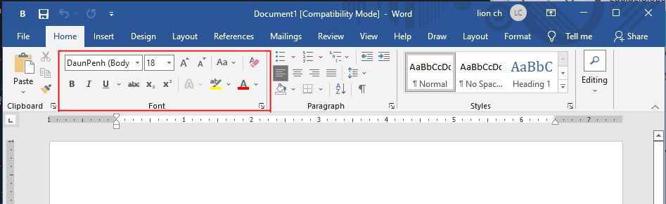

មេរៀនទី-១
សេចក្តីនែនាំ៖
The Microsoft Word ជាកម្មវិធីមួយដែលដំណើរការលើកុំព្យូទ័រ អនុញ្ញាត្តិអោយយើង បង្កើតចេញជា ឯកសារផ្សេងៗ ជាច្រើន បានទៅតាមការចង់បាន។ នៅក្នុងមេរៀននេះ, យើងនឹងរៀនស្គាល់ ពីមុខងារសំខាន់ៗ ជាច្រើននៅលើផ្ទាំងការងារ ក៏ដូជា កម្មវីធី Word ទាំងមូល, ទាំងអស់នោះ មានដូចជា Rebbon, Quick Access Toolbar, & Backtage view, etc.
មេរៀន Office Word
ដំណើរនៃការសិក្សារនៅលើមេរៀន គឺតម្រូវគ្រប់ជំនាន់ទាំងអស់ រួមទាំង Word 2019, Word 2016, and Office 365.
មុខងារទាក់ទងនៅលើ Word
គ្រប់ពេលដែលយើងបានបើកកម្មវិធីជាលើកដំបូង, the Start Screen
នឹងបង្ហាញចេញ, ជាទម្រង់ (form) ដូចរូបខាងក្រោម, អនុញ្ញាត្តិអោយយើងបង្កើតជាផ្ទាំង
ឯកសារថ្មីមួយ, ឬអាចជ្រើសរើសគំរូ template មានស្រាប់ក្នុងកម្មវិធី, ហើយក៏អាចចូលទៅធ្វើការ
កែរាល់ឯកសារចាស់បានផងដែរ។ (នៅលើ start screen ជ្រើសយក Blank document
ដើម្បីចូលទៅកាន់ផ្ទាំងឯកសារថ្មីមួយ)
Word Interface
The Ribbon
ការប្រើពាក្យ tabbed Ribbon system ជំនួសអោយពាក្យដើមmenus។ the Ribbon មានផ្ទុក tabs ច្រើន ដែលវាថិតនៅជិតនិងផ្នែកខាងលើ window.
tap មួយៗ មានចងជាក្រុមឧបករណ៏បញ្ជាជាច្រើន, ជាឧទាហរណ៏, Font group នៅលើ Home tap មានផ្ទុកនូឧបករណ៏បញ្ជា សម្រាប់ធ្វើការដូរទ្រង់ទ្រាយ ទៅលើអត្ថបទក្នុងឯកសាររបស់យើងជាច្រើន

គ្រុបមួយចំនួន មានបង្ហាញ សញ្ញាព្រួយតូចនៅខាងក្រោមជ្រុងខាងស្តាំដែលអាចអោយយើងចុចដើម្បីបង្ហាញមុខងារច្រើនផ្សេងទៀត។

បង្ហាញ ឬ លាក់ Ribbon
ប្រសិនបើអ្នកយល់ថាribbon មានភាពរញេរញ៉ៃ លើផ្ទៃការងារ, អ្នកអាចធ្វើការលាក់វាបាន ដើម្បីលាក់ ត្រូវចុចលើ Ribbon Display Option សញ្ញាព្រួញនៅខាងលើផ្នែកខាងស្តាំ ribbon បន្ទាប់មក ជ្រើសរើស មុខងារណាមួយដែលចង់ប្រើ ពីផ្ទាំង drop-down menu
- Auto-hide Ribbon: ដើម្បីបង្ហាញចេញឯកសារជាលក្ខណះពេញផ្ទៃទាំងមូល និង លាក់រាល់ ribbon ទាំងអស់ចេញ។ ដើម្បីបង្ហាញឡើងវិញ ត្រូវចុច Show Taps and Commands
- Show Tabs ជម្រើសមួយនេះ លាក់រាល់ គ្រុបបញ្ជាទាំងអស់ចេញ បើសិនមិនត្រូវការប្រើ ប៉ុន្តែ tabs នៅបង្ហាញធម្មតា។ ដើម្បីបង្ហាញឡើងវិញ ត្រូវចុច Show Taps and Commands
- Show Tabs and Commands ជម្រើសមួយនេះ សម្រាប់បង្ហាញជាទម្រង់ដើម, ជាទូទៅកម្មវិធី ត្រូវបានកំណត់ជាទំរង់ដើម រាល់ពេលដែលបើកជាលើកដំបូង។
មុខងារ Tell me feature
ប្រសិនបើអ្នកមិនអាចរកឃើញ ឧបករណ៏បញ្ជា(the command) ណាមួយ ដែលត្រូវការយកមកប្រើ The Tell me ជាផ្នែកមួយ ដើម្បីជាជំនួយដល់អ្នកក្នុងការ ស្វែងរក រាល់ឧបករណ៏បញ្ជា ដែលអ្នកត្រូវការ ដំណើរការរបស់វា ដូចទៅនឹង Search Bar ដែរ គ្រាន់តែអ្នកវាយពាក្យជាភាសារអង់គ្លេសដែលចង់ស្វែរក នោះជម្រើស រាយនាមនឹងបង្ហាញចេញ។

The Quick Access Toolbar
នៅផ្នែកខាងលើ the Ribbon គឺជា Quick access toolbar ដែលអ្នកអាច ដកឬដាក់ឧបករណ៏បញ្ជា (The command) មួយចំនួន លើ Quick Access Toolbar នេះបាន, ជាទូទៅទំរង់ដើមរបស់វា មានបង្ហាញ ឧបករណ៏បញ្ជា(the command) មួយចំនួនដូចជា Save, Undo, & Redo, យើងអាចធ្វើការបញ្ជូលឧករណ៏ផ្សេងបន្ថែមទៀតបាន។

របៀបបញ្ជូលឧបករណ៏បញ្ជា(the command) ទៅកាន់ Quick Access Toolbar
១-ចុចលើសញ្ញាព្រួញចុះក្រោម នៅផ្នែកខាងស្តាំ នៃ Quick Access Toolbar

២-ជ្រើសរើស ដោយការយក mouse ចុចលើ បញ្ជាណាមួយ(the command) ដែលអ្នកចង់យកទៅដាក់បង្ហាញលើ Quick Access Toolbar

៣-ឧបករណ៏បញ្ជា(the command) នឹងត្រូវបានដាក់បង្ហាញនៅលើ Quick Access Toolbar ដូចរូបខាងក្រោម

មុខងារបន្ទាត់ (The Ruler)
បន្ទាត់(The Ruler) ស្ថិតនៅផ្នែកខាងលើ និងផ្នែកជំហៀង ខាងឆ្វេង នៃឯកសារ, វាបង្កលក្ខណះងាយស្រួល ក្នុងការកំនត់រង្វាស់ឯកសារអោយបានត្រឹមត្រូវជាក់លាក់។ យើងអាចធ្វើកាលាក់ ឬបង្ហាញបន្ទាត់បានដោយធ្វើតាមជំហាន ដូចខាងក្រោម៖
ដើម្បីលាក់ឬបង្ហាញបន្ទាត់ (To show or hide the ruler)
១-ចុចលើពាក្យ View tab.

២-ដើម្បីបង្ហាញបន្ទាត់ ត្រូវ ធីក លើប្រអប់ Ruler / ដើម្បីលាក់ត្រូវដោះ ធីក ចេញពីប្រអប់វិញ
មុខងារ Backstage view
Backstage view ផ្តល់ជម្រើសផ្សេងៗក្នុងការប្រើប្រាស់ ដូចជា, ការរក្សារទុកឯកសារលើកុំព្យូទ័រ (Saving), បើកយកឯកសារចាស់មកប្រើ (Opening a File) បោះពុម្ភឯកសារ (Printing), និងការចែករំលែកឯកសារ (Sharing Document)។ ដើម្បីចូលទៅកានទីតាំង Backstage view, សូមចុចលើ file tab នៅលើ Ribbon។

ទម្រង់ឯកសារបង្ហាញចេញ និងការពង្រីកបង្រួម (Document views and zooming)
របៀបក្នុងការបង្ហាញចេញរាល់ឯកសារក្នុង Wordមានជម្រើសក្នុងការបង្ហាញ ផ្សេងៗគ្នា។ យើងអាចជ្រើសរើសវិធីបង្ហាញឯកសារតាម Read Mode, Print Layout, or Web Layout, ជម្រើសទាំងអស់ត្រូវបានយកមកប្រើប្រាស់សម្រាប់កិច្ចការផ្សេងៗ, ជាពិសេសមុនពេលចាប់ផ្តើមបោះពុម្ភឯកសារចេញ។ យើងក៏អាចធ្វើការ ពង្រីក ឬបង្រួម ដើម្បីអោយឯកសាររបស់យើងងាយស្រួលមើលផងដែរ។
Selection Defferent document views
ដើម្បីធ្វើការបង្ហាញទ្រង់ទ្រាយឯកសារចេញជាលក្ខណះខុសៗគា្ន,គ្រាន់តែចូលទៅកាន់ទី តាំង ដើម្បីធ្វើការ ជ្រើសរើសយក មុខងារមួយ ថិតនៅខាងក្រោមជ្រុងខាងស្តាំ របស់ window's word ជាការស្រេច។

👉 Read Mode: រូបភាពខាងក្រោមបង្ហាញចេញឯកសារជា ទម្រង់ Read Mode
👉 Print Layout: រូបភាពខាងក្រោមបង្ហាញចេញឯកសារជា ទម្រង់ Print Layout
👉 Web Layout: រូបភាពខាងក្រោមបង្ហាញចេញឯកសារជា ទម្រង់ Web Layout
ពង្រីក និង បង្រួម (Zoom in & Zoom out)
ដើម្បីធ្វើការ ពង្រីក ឬបង្រួម អត្ថបទ ក៏ដូចជាឯកសារទាំងមូល គ្រាន់តែយក Mouse ចុចលើសញ្ញា ដក -(zoom out) ឬបូក +(zoom in) ដែលថិតនៅខាងក្រោម ជ្រុងខាងស្តាំ នៃ window's word ជាការស្រេច។
លំហាត់អនុវត្តន៏ (Pratice in challenge!)
👉 ជំហ៊ានទី១-បើកកម្មវិធី Word, បង្កើតផ្ទាំងការងារថ្មីមួយ (blank document)។
👉 ជំហ៊ានទី២-ដូរ Ribbon Dispaly Option ទៅជា Show Tabs។
👉 ជំហ៊ានទី៣-ប្រើប្រាស់ Customize Quick Toolbar ដាក់បញ្ចូលមុខងារថ្មីពីរ គឺ Quick Print និង Spelling & Grammar។
👉 ជំហ៊ានទី៤-នៅក្នុងប្រអប់ Tell me bar វាពាក្យ Shape ចូល បន្ទាប់មក Press Enter។
👉 ជំហ៊ានទី៥- ចុចជ្រើសយក shape ណាមួយ បន្ទាប់មក ចុចពីរដង double Click ទៅលើផ្ទៃការងាររបស់អ្នក។
👉 ជំហ៊ានទី៦-បង្ហាញបន្ទាត់ (Ruler) ប្រសិនវាមិនបង្ហាញ។
👉 ជំហ៊ានទី៧-ពង្រីកឯកសារ (Zoom) 120%។
👉 ជំហ៊ានទី៨-ដូរទម្រង់ឯកសារបង្ហាញចេញ ទៅជា Web Laout ។
👉 ជំហ៊ានទី៩-ពេលបញ្ជប់ ៨ជំហ៊ានខាងលើ ផ្ទាំងឯកសាររបស់ នឹងមានទម្រង់ ដូចខាងក្រោមនេះ
👉 ជំហ៊ានទី១០-ដូរ Ribbon Display Options ទៅទម្រង់ដើមវិញ ដោយជ្រើសយក Show Tabs and Commands និងដូរ Document Views ទៅជា Print Layout វិញ ។